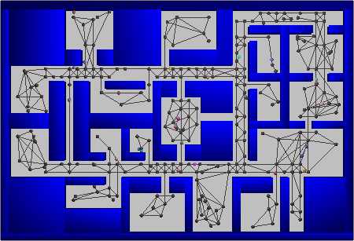
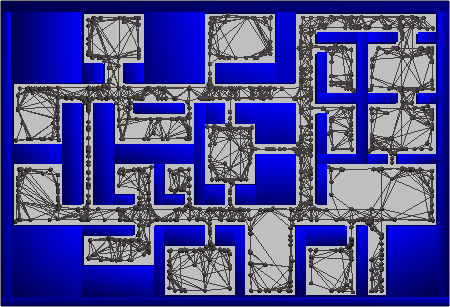

ICRA 2021
Avoidance Critical Probabilistic Roadmaps
We learn avoidance-critical regions from local cues and use them to build sparse, reusable roadmaps for dynamic, multi-agent planning.
University of Illinois at Urbana-Champaign · Google Brain

Overview
Learning structure for faster planning.
Motion planning in dynamic environments is bottlenecked by obstacles and narrow passages. We model avoidance-criticality as a learnable signal, train a network to detect it from local features, and use it to generate hierarchical probabilistic roadmaps. The result is faster planning with higher reuse in multi-agent settings.
Avoidance Criticality
Spatial context cues from local grids.
From darkest to lightest: static obstacles, free space, agent origin, avoidance critical region, and goal region.
ACPRM vs. MAPRM
Sparser graphs without sacrificing coverage.
ACPRM generated roadmap.

MAPRM baseline roadmap.